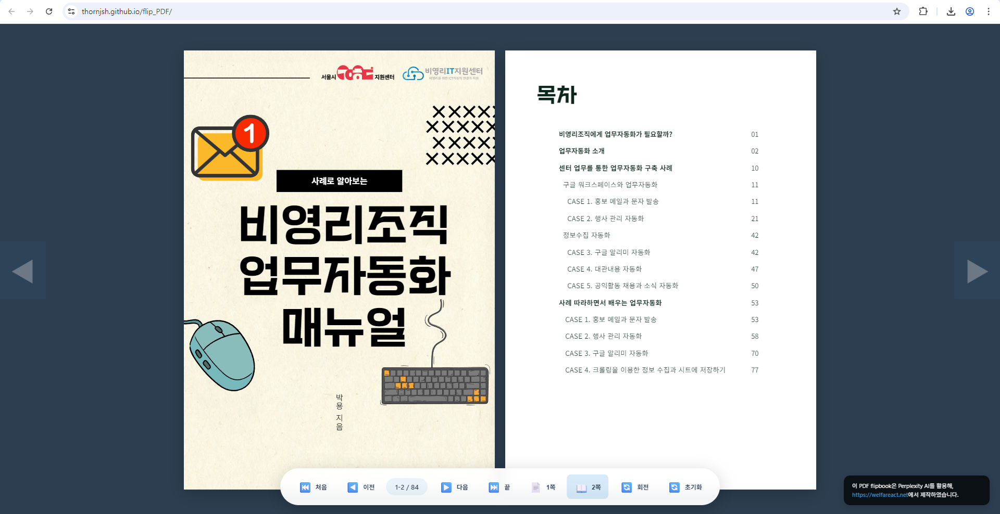

v1.0 온오프라인 통합 버전

v3.0 특정파일 전용 웹북
PDF 문서를 실제 책을 넘기는 듯한 인터페이스로 변환하여 보여주는 도구입니다. 단순한 문서 확인을 넘어, 생동감 있는 열람 환경을 제공하며 상황에 맞는 여러 버전을 활용할 수 있습니다.
v1.0 온오프라인 통합 버전
v3.0 특정파일 전용 웹북
HTML 파일 하나로 온라인과 오프라인 모두에서 빠르게 PDF를 확인할 수 있도록 최적화된 버전입니다. 플립 효과보다는 빠른 로딩 속도에 집중하여 실무에서 즉시 활용하기 좋습니다.
시각적으로 화려한 플립 효과가 적용된 버전입니다. 최초 실행 시 PDF URL을 입력하여 설정할 수 있으며, 홍보용 자료나 대외 공개용 보고서를 보여줄 때 매우 효과적입니다.
특정 PDF 파일 하나를 전용 플립북으로 만들 때 가장 적합합니다.
소스 코드 내부의 FIXED_PDF_URL 부분을 수정하여 기관만의 독립적인 플립북 서비스를 구축할 수 있습니다.
이 도구들은 인공지능 프롬프트를 활용해 기획되고 제작되었습니다. 코드를 직접 수정하거나 응용하려는 사회복지사분들을 위해 제작 시 활용했던 프롬프트 내용을 정리해두었습니다.
제작 프롬프트 정리 문서 보기 →